![[*]](crossref.png) . In addition to the MNA matrix
. In addition to the MNA matrix
To calculate the small signal noise of a circuit, the AC noise
analysis has to be applied [6]. This technique uses the
principle of the AC analysis described in chapter 4 on
page . In addition to the MNA matrix  one needs
the noise current correlation matrix
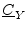 of the circuit,
that contains the equivalent noise current sources for every node on
its main diagonal and their correlation on the other positions.
one needs
the noise current correlation matrix
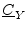 of the circuit,
that contains the equivalent noise current sources for every node on
its main diagonal and their correlation on the other positions.
The basic concept of the AC noise analysis is as follows: The
noise voltage at node  should be calculated, so the voltage arising
due to the noise source at node
should be calculated, so the voltage arising
due to the noise source at node  is calculated first. This has to
be done for every
is calculated first. This has to
be done for every  nodes and after that adding all the noise
voltages (by paying attention to their correlation) leads to the
overall voltage. But that would mean to solve the MNA equation
nodes and after that adding all the noise
voltages (by paying attention to their correlation) leads to the
overall voltage. But that would mean to solve the MNA equation  times. Fortunately there is a more easy way. One can perform the
above-mentioned
times. Fortunately there is a more easy way. One can perform the
above-mentioned  steps in one single step, if the reciprocal MNA
matrix is used. This matrix equals the MNA matrix itself, if the
network is reciprocal. A network that only contains resistors,
capacitors, inductors, gyrators and transformers is reciprocal.
steps in one single step, if the reciprocal MNA
matrix is used. This matrix equals the MNA matrix itself, if the
network is reciprocal. A network that only contains resistors,
capacitors, inductors, gyrators and transformers is reciprocal.
The question that needs to be answered now is: How to get the reciprocal MNA matrix for an arbitrary network? This is equivalent to the question: How to get the MNA matrix of the adjoint network. The answer is quite simple: Just transpose the MNA matrix!
For any network, calculating the noise voltage at node  is done by
the following three steps:
is done by
the following three steps:
| 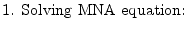 | 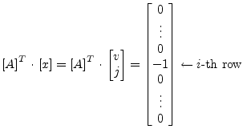 | (5.3) | ||
| 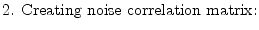 | 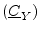 | (5.4) | ||
| 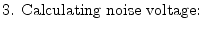 | 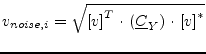 | (5.5) |
If the correlation between several noise voltages is also wanted, the procedure is straight forward: Perform step 1 for every desired node, put the results into a matrix and replace the vector 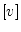 in step 3 by this matrix. This results in the complete correlation matrix. Indeed, the above-mentioned algorithm is only a specialisation of transforming the noise correlation matrices (see section 2.4.2).
If the normal AC analysis has already be done with LU decomposition, then the most time consuming work of step 1 has already be done.
| 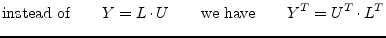 | (5.6) |
I.e. 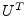 becomes the new  matrix and 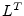 becomes the new 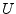
matrix, and the matrix equation do not need to be solved again, because
only the right-hand side was changed. So altogether this is a quickly
done task. (Note that in step 3, only the subvector of vector
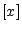 is used. See section 3.1.3 for details on this.)
matrix and 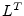 becomes the new 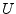
matrix, and the matrix equation do not need to be solved again, because
only the right-hand side was changed. So altogether this is a quickly
done task. (Note that in step 3, only the subvector of vector
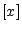 is used. See section 3.1.3 for details on this.)
If the noise voltage at another node needs to be known, only the right-hand side of step 1 changes. That is, a new LU decomposition is not needed.
Reusing the LU decomposed MNA matrix of the usual AC analysis is possible if there has been no pivoting necessary during the decomposition.
When using either Crout's or Doolittle's definition of the LU
decomposition during the AC analysis the decomposition representation
changes during the AC noise analysis as the matrix  gets
transposed. This means:
gets
transposed. This means:
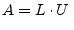 with  and 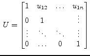 and 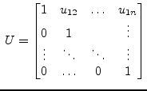 |
(5.7) |
becomes
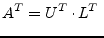 with 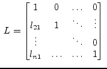 and  |
(5.8) |
Thus the forward substitution (as described in section 15.2.4) and the backward substitution (as described in section 15.2.4) must be slightly modified.
| 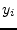 | 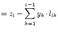 | 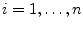 | (5.9) |
| 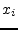 | 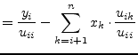 | 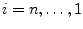 | (5.10) |
Now the diagonal elements 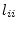 can be neglected in the forward substitution but the 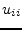 elements must be considered in the backward substitution.
The network that is depicted in figure 5.1 is given. The MNA equation is (see chapter 3.1):
| 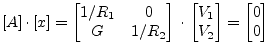 | (5.11) |
Because of the controlled current source, the circuit is not reciprocal. The noise voltage at node 2 is the one to search for. Yes, this is very easy to calculate, because it is a simple example, but the algorithm described above should be used. This can be achived by solving the equations
| 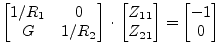 | (5.12) |
| 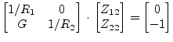 | (5.13) |
Fortunately, there is Tellegen's Theorem: A network and its adjoint network are reciprocal to each other. That is, transposing the MNA matrix leads to the one of the reciprocal network. To check it out:
| 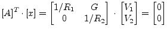 | (5.14) |
Compare the transposed matrix with the reciprocal network in figure 5.2. It is true! But now it is:
| 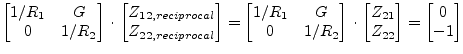 | (5.15) |
Because  of the original network equals
of the original network equals  of the
reciprocal network, the one step delivers exactly what is needed.
So the next step is:
of the
reciprocal network, the one step delivers exactly what is needed.
So the next step is:
| 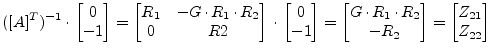 | (5.16) |
Now, as the transimpedances are known, the noise voltage
at node 2 can be computed. As there is no correlation, it writes
as follows:
| 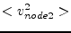 | 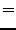 | 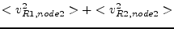 | (5.17) |
| 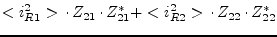 | (5.18) | ||
| 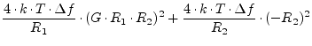 | (5.19) | ||
| 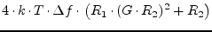 | (5.20) |
That's it. Yes, this could have be computed more easily, but now the universal algorithm is also clear.